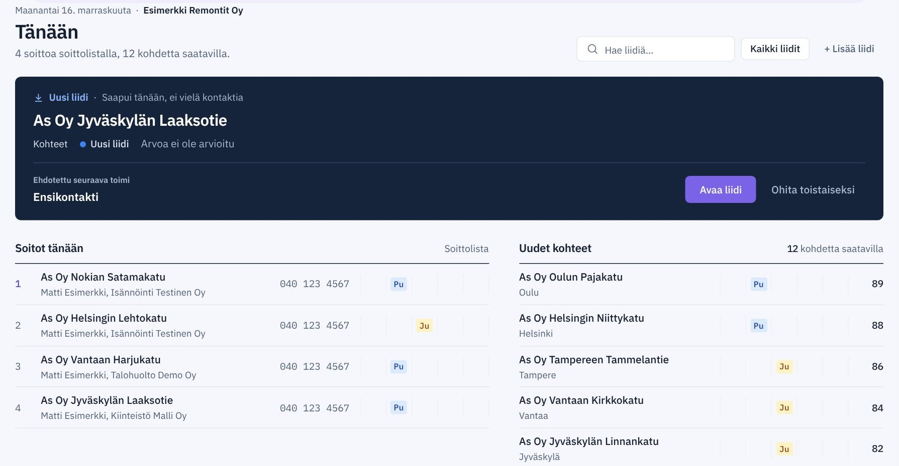
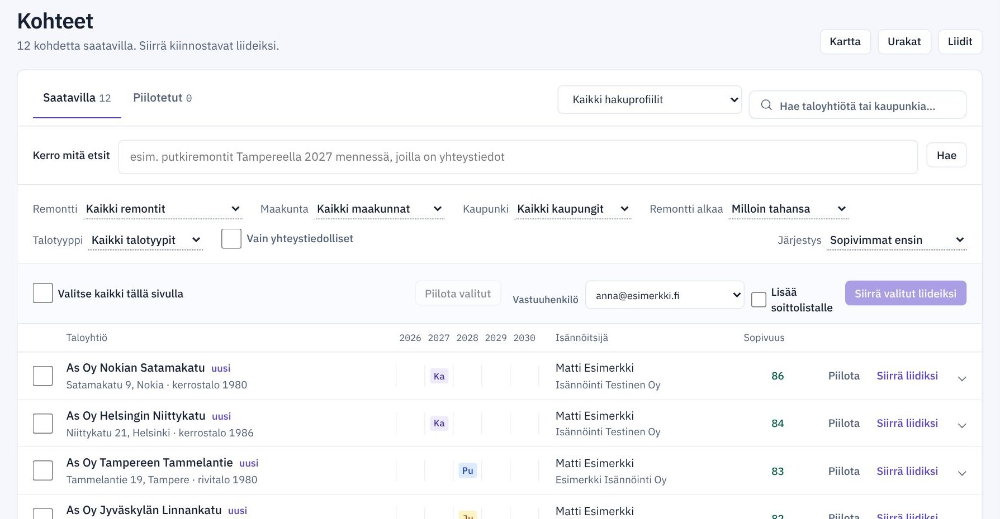
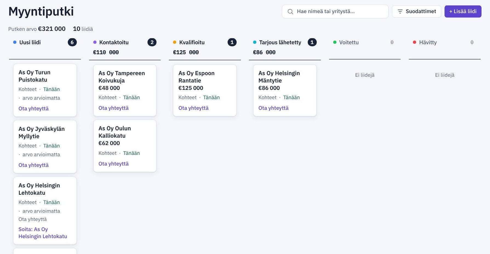
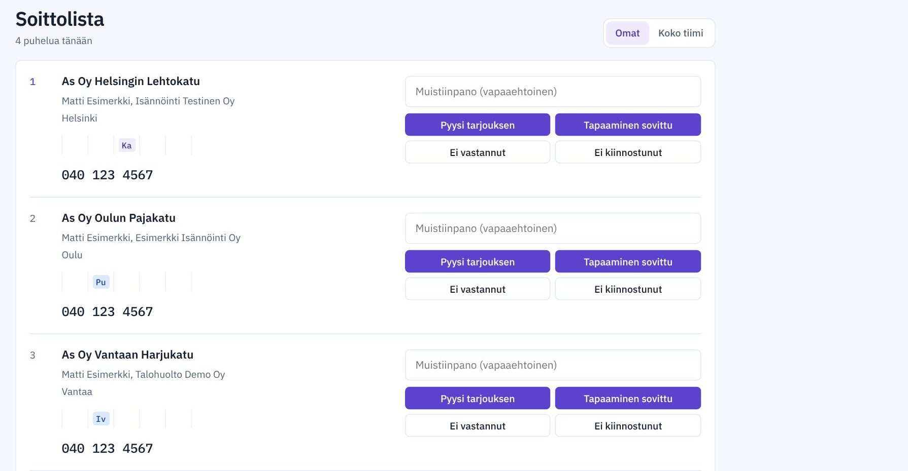
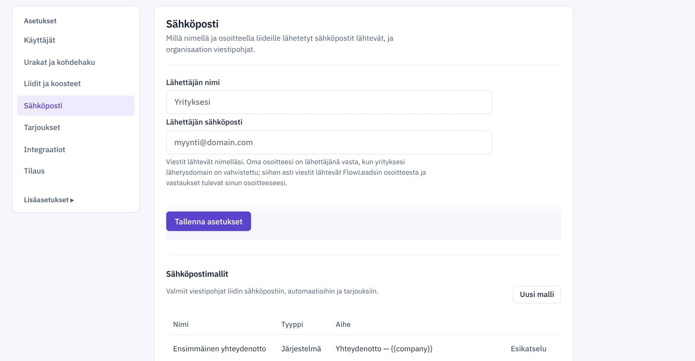

<style>
.shot{position:absolute;right:64px;top:228px;width:660px;border-radius:12px;border:1px solid var(--line);box-shadow:0 1px 0 rgba(0,0,0,.02)}
.dark .shot{border-color:#2c3048}
.col{position:absolute;left:64px;top:228px;width:470px}
.col h3{font-size:18px;margin:0 0 8px}
.col ul.ck li{font-size:15.5px;margin-bottom:8px}
.col p{font-size:15px}
.ui{font-weight:600;white-space:nowrap}
.top h2{font-size:42px}
.mini{width:100%;border-collapse:collapse;font-size:14px}
.mini td{padding:7px 10px 7px 0;border-bottom:1px solid var(--line);vertical-align:top}
.dark .mini td{border-color:#2c3048;color:var(--mut)}
.mini td:first-child{font-weight:600;white-space:nowrap;color:inherit}
.light .mini td:first-child{color:var(--ink)}
.dark .mini td:first-child{color:var(--tx)}
.mini td.n{font-variant-numeric:tabular-nums;text-align:right;white-space:nowrap}
.cap{position:absolute;right:64px;top:578px;width:660px;font-size:12px;color:#8a8ca0}
.tip{background:var(--lcard);border-radius:10px;padding:12px 16px;font-size:14px;color:var(--ink);margin-top:10px}
.dark .tip{background:#221d3f;color:var(--tx)}
.tip b{color:var(--deep)}
.dark .tip b{color:var(--hl)}
kbd{font-family:inherit;font-size:12px;border:1px solid var(--line);border-bottom-width:2px;border-radius:4px;padding:0 5px;background:#fff;color:var(--ink)}
</style>

<!-- 1 KANSI -->
<section class="s dark">
  
  <div style="position:absolute;left:64px;top:140px;width:760px">
    <div class="eyebrow">FlowLeads · Käyttöohje</div>
    <h1 style="margin-top:18px;font-size:58px;white-space:nowrap">FlowLeads-käyttöohje</h1>
    <p class="lead" style="margin-top:24px;width:620px">Näin löydät taloyhtiöiden tulevat remontit, siirrät parhaat kohteet liideiksi ja viet ne kaupaksi. Mukana myyjän päivittäinen työ ja ylläpitäjän asetukset.</p>
  </div>
  <div style="position:absolute;left:64px;right:64px;top:470px;display:grid;grid-template-columns:repeat(4,1fr);gap:16px">
    <div class="card"><div class="num">1</div><h3 style="margin-top:12px;font-size:18px">Avaa Kohteet</h3><p style="font-size:14px">Uudet taloyhtiöt heti näkyvissä</p></div>
    <div class="card"><div class="num">2</div><h3 style="margin-top:12px;font-size:18px">Valitse parhaat</h3><p style="font-size:14px">Sopivuus ja suodattimet</p></div>
    <div class="card"><div class="num">3</div><h3 style="margin-top:12px;font-size:18px">Siirrä liideiksi</h3><p style="font-size:14px">Soittolista ja sähköposti</p></div>
    <div class="card" style="background:#221d3f;border-color:#3a3170"><div class="num">4</div><h3 style="margin-top:12px;font-size:18px">Vie kaupaksi</h3><p style="font-size:14px">Myyntiputki ja tarjous</p></div>
  </div>
  <div class="foot"><span>flowlysolutions.net</span><span class="mid">Kuvien tiedot ovat kuvitteellisia</span><span class="mono">N</span></div>
</section>

<!-- 2 ALOITUS -->
<section class="s light">
  
  <div class="top">
    <div class="eyebrow">Aloitus</div>
    <h2>Kirjautuminen ja roolit</h2>
  </div>
  <div class="body grid c3" style="top:212px;bottom:auto;align-items:start">
    <div class="card p"><div class="bar"></div><h3>Käyttöönotto</h3><p>Avaa Flowlyn lähettämä kutsulinkki (voimassa 7 päivää), aseta vähintään 12 merkin salasana ja paina <span class="ui">Viimeistele käyttöönotto</span>. Valmiina odottaa hakuprofiili urakoillesi koko Suomesta. Ensimmäiset kohteet näkyvät noin 10 minuutin kuluttua.</p></div>
    <div class="card"><div class="bar"></div><h3>Kaksivaiheinen tunnistautuminen</h3><p>Pakollinen ylläpitäjälle. Skannaa QR-koodi todennussovelluksella, kirjoita koodi ja tallenna varakoodit. Unohtunut salasana: <span class="ui">Unohditko salasanan?</span> kirjautumissivulla.</p></div>
    <div class="card"><div class="bar"></div><h3>Roolit</h3><p><b>Myyjä</b> käyttää kohteita, liidejä, tehtäviä, soittolistaa ja tarjouksia. Myyjän siirrot tulevat hänen omiksi liideikseen.</p><p style="margin-top:8px"><b>Ylläpitäjä</b> hallitsee lisäksi käyttäjiä, urakoita, koosteita, sähköpostia, integraatioita ja tilausta.</p></div>
  </div>
  <div class="foot"><span>flowlysolutions.net</span><span class="mono">N</span></div>
</section>

<!-- 3 KOJELAUTA -->
<section class="s light">
  
  <div class="top"><div class="eyebrow">Kojelauta</div><h2>Päivän työt yhdellä silmäyksellä</h2></div>
  <div class="col">
    <ul class="ck">
      <li><b>Tänään</b>: puhelut soittolistalla ja saatavilla olevat kohteet</li>
      <li><b>Nostokortti</b>: liidi, joka kannattaa hoitaa ensin. <span class="ui">Avaa liidi</span> vie suoraan siihen.</li>
      <li><b>Soitot tänään</b>, <b>Uudet kohteet</b>, <b>Uudet liidit</b> ja <b>Seurattavat kohteet</b></li>
      <li>Myöhässä olevat tehtävät ja avoimet tarjoukset</li>
      <li>Valikko: Myynti, Toiminta ja Hallinta. <span class="ui">Ilmoitukset</span> valikon alaosassa.</li>
    </ul>
    <div class="tip"><b>Pikahaku:</b> <kbd>Ctrl</kbd> + <kbd>K</kbd> (Mac <kbd>Cmd</kbd> + <kbd>K</kbd>) löytää liidit, tehtävät ja komennot missä tahansa.</div>
  </div>
  
  <div class="foot"><span>flowlysolutions.net</span><span class="mono">N</span></div>
</section>

<!-- 4 KOHTEET -->
<section class="s light">
  
  <div class="top"><div class="eyebrow">Kohteet</div><h2>Löydä ja rajaa kohteet</h2></div>
  <div class="col">
    <ul class="ck">
      <li>Uudet taloyhtiöt tulevat Kohteet-sivulle heti, kun ne löytyvät. Ne on merkitty tunnuksella <span class="ui">uusi</span>.</li>
      <li>Suodattimet: <b>Remontti, Maakunta, Kaupunki, Remontti alkaa, Talotyyppi</b> ja <b>Vain yhteystiedolliset</b>. Maakunnissa ovat kaikki 18, ja valitun maakunnan kaikki kunnat.</li>
      <li><b>Kerro mitä etsit</b>: kirjoita esim. ”putkiremontit Tampereella 2027 mennessä”, niin suodattimet asettuvat itse.</li>
      <li><b>Tallennetut haut</b> ilmoittavat uusista osumista (enintään 15 per käyttäjä).</li>
      <li>Puuttuva tieto ei koskaan pudota kohdetta pois rajauksesta.</li>
    </ul>
  </div>
  
  <div class="foot"><span>flowlysolutions.net</span><span class="mono">N</span></div>
</section>

<!-- 5 SOPIVUUS JA SIIRTO -->
<section class="s dark">
  
  <div class="top"><div class="eyebrow">Kohteet</div><h2>Sopivuus ja siirto liideiksi</h2></div>
  <div style="position:absolute;left:64px;top:228px;width:520px">
    <h3 style="font-size:18px;margin-bottom:8px">Sopivuus 0–100</h3>
    <table class="mini">
      <tr><td>Varmuus</td><td>Kuinka varmasti remontti on tulossa</td><td class="n">40</td></tr>
      <tr><td>Ajoitus</td><td>Kuinka pian remontti alkaa</td><td class="n">25</td></tr>
      <tr><td>Yhteystiedot</td><td>Päättäjän puhelin ja sähköposti</td><td class="n">15</td></tr>
      <tr><td>Signaalit</td><td>Erillisten lähteiden määrä</td><td class="n">10</td></tr>
      <tr><td>Tuoreus</td><td>Uusimman tiedon ikä</td><td class="n">10</td></tr>
    </table>
    <div class="tip">Pisteet oppivat valinnoistanne: siirretyt kohteet nostavat samankaltaisia, piilotetut laskevat.</div>
  </div>
  <div style="position:absolute;right:64px;top:228px;width:540px">
    <h3 style="font-size:18px;margin-bottom:12px">Siirrä liideiksi</h3>
    <ul class="ck">
      <li style="font-size:15.5px">Valitse kohteet valintaruuduista.</li>
      <li style="font-size:15.5px">Valitse <span class="ui">Vastuuhenkilö</span> (ylläpitäjä) ja rastita tarvittaessa <span class="ui">Lisää soittolistalle</span>.</li>
      <li style="font-size:15.5px">Paina <span class="ui">Siirrä valitut liideiksi</span>.</li>
      <li style="font-size:15.5px">Liidi ilman puhelinnumeroa ei mene soittolistalle. Sivu varoittaa ennen siirtoa.</li>
      <li style="font-size:15.5px"><span class="ui">Piilota</span> siirtää kohteen Piilotetut-välilehdelle, josta sen saa takaisin.</li>
      <li style="font-size:15.5px">Samasta taloyhtiöstä tulee aina vain yksi liidi.</li>
    </ul>
  </div>
  <div class="foot"><span>flowlysolutions.net</span><span class="mono">N</span></div>
</section>

<!-- 6 TALOYHTIÖKORTTI -->
<section class="s light">
  
  <div class="top"><div class="eyebrow">Taloyhtiöt ja isännöitsijät</div><h2>Kaikki tieto yhdestä yhtiöstä</h2></div>
  <div class="col">
    <h3>Taloyhtiökortti</h3>
    <ul class="ck">
      <li>Aukeaa taloyhtiön nimestä Kohteet-sivulla, kojelaudalla tai liidillä.</li>
      <li>Perustiedot, isännöinti, hallitus ja huolto, pisteet eriteltyinä, tulevat remontit ja signaalit aikajanalla.</li>
    </ul>
    <h3 style="margin-top:14px">Isännöitsijät ja kartta</h3>
    <ul class="ck">
      <li><b>Isännöitsijät</b>: kenellä on eniten sopivia kohteita, avoimia liidejä ja voitettuja kauppoja.</li>
      <li><b>Kartta</b> näyttää kohteet samoilla rajauksilla kuin lista.</li>
    </ul>
    <p style="font-size:13px;color:var(--lmut)">Hallituksen puheenjohtajan tietoja saa käyttää vain tätä remonttia koskevaan yhteydenottoon.</p>
  </div>
  
  <div class="foot"><span>flowlysolutions.net</span><span class="mono">N</span></div>
</section>

<!-- 7 LIIDIT -->
<section class="s light">
  
  <div class="top"><div class="eyebrow">Liidit ja myyntiputki</div><h2>Yksi remontti, yksi liidi</h2></div>
  <div class="col">
    <ul class="ck">
      <li>Liidin yrityksenä on taloyhtiö ja yhteyshenkilönä isännöitsijä.</li>
      <li>Liidisivulla: <b>Miksi kohde löytyi</b>, <span class="ui">Lähetä sähköposti</span>, <span class="ui">Kirjaa soitto</span>, muistiinpanot, tehtävät, tapaamiset ja tarjoukset.</li>
      <li><b>Myyntiputki</b>: vedä kortti vaiheesta toiseen. Uusi liidi → Kontaktoitu → Kvalifioitu → Tarjous lähetetty → Voitettu / Hävitty.</li>
      <li>Hävitylle valitaan syy, joka näkyy raporteissa.</li>
      <li><span class="ui">Tuo CSV</span> (enintään 2000 riviä) ja <span class="ui">Vie</span>: CSV, HubSpot- tai Pipedrive-tiedosto.</li>
    </ul>
  </div>
  
  <div class="foot"><span>flowlysolutions.net</span><span class="mono">N</span></div>
</section>

<!-- 8 SOITTOLISTA -->
<section class="s light">
  
  <div class="top"><div class="eyebrow">Soittolista ja tehtävät</div><h2>Päivän puhelut järjestyksessä</h2></div>
  <div class="col">
    <p>Liidit tulevat listalle siirron yhteydessä. Soita, kirjoita halutessasi muistiinpano ja valitse lopputulos:</p>
    <table class="mini" style="margin-top:6px">
      <tr><td>Ei vastannut</td><td>Siirtyy seuraavaan aamuun klo 9.00</td></tr>
      <tr><td>Pyysi tarjouksen</td><td>Aamulle tehtävä ”Tee tarjous”</td></tr>
      <tr><td>Tapaaminen sovittu</td><td>Merkitään tehdyksi</td></tr>
      <tr><td>Ei kiinnostunut</td><td>Merkitään tehdyksi</td></tr>
    </table>
    <p style="margin-top:12px">Jokainen lopputulos kirjataan liidille soittona. <b>Tehtävät</b>-sivulla ovat Myöhässä, Tänään, Tämä viikko ja Myöhemmin. Ajat ovat Suomen aikaa.</p>
  </div>
  
  <div class="foot"><span>flowlysolutions.net</span><span class="mono">N</span></div>
</section>

<!-- 9 SÄHKÖPOSTI -->
<section class="s light">
  
  <div class="top"><div class="eyebrow">Sähköposti</div><h2>Viestit suoraan liidiltä</h2></div>
  <div class="col">
    <ul class="ck">
      <li>Avaa liidi ja paina <span class="ui">Lähetä sähköposti</span>. Painike on pois käytöstä, jos liidillä ei ole sähköpostiosoitetta.</li>
      <li>Valitse halutessasi valmis <span class="ui">Malli</span>, kirjoita aihe ja viesti ja tarkista <span class="ui">Esikatselu</span>.</li>
      <li>Lähetetyt viestit näkyvät liidin <span class="ui">Sähköpostihistoria</span>-kohdassa.</li>
      <li>Muualta lähetetyn viestin voi merkitä liidille painikkeella <span class="ui">Kirjaa sähköposti</span>.</li>
      <li>Ylläpitäjä asettaa lähettäjän nimen ja osoitteen sekä viestimallit kohdassa <span class="ui">Asetukset → Sähköposti</span>. Vastaukset tulevat lähettäjän osoitteeseen.</li>
    </ul>
    <div class="tip"><b>Lisätoiminnot:</b> automaattiset sähköpostisekvenssit ja automaatiot eivät ole oletuksena käytössä. Flowly avaa ne organisaatiollesi erikseen.</div>
  </div>
  
  <div class="foot"><span>flowlysolutions.net</span><span class="mono">N</span></div>
</section>

<!-- 10 TARJOUKSET JA RAPORTIT -->
<section class="s light">
  
  <div class="top"><div class="eyebrow">Tarjoukset ja raportit</div><h2>Tarjouksesta tulokseen</h2></div>
  <div class="col">
    <h3>Tarjoukset</h3>
    <ul class="ck">
      <li>Liidin Tarjoukset-välilehti → <span class="ui">Luo tarjous</span>. Lisää rivit, tarkista esikatselu ja paina <span class="ui">Lähetä</span>.</li>
      <li>Asiakas hyväksyy nimellään tai hylkää linkistä. Saat ilmoituksen ja sähköpostin.</li>
      <li>Tilat: Luonnos, Lähetetty, Avattu, Hyväksytty, Hylätty, Vanhentunut. Lähetetty tarjous muokataan kopiona (<span class="ui">Luo kopio</span>).</li>
    </ul>
    <h3 style="margin-top:12px">Raportit</h3>
    <ul class="ck">
      <li><b>Kuukausiraportti</b> vertaa kuluvaa kuukautta edelliseen. Ylläpitäjä voi tilata sen sähköpostiin kuun 1. päivälle.</li>
      <li><b>Myyntiennuste</b> laskee odotetun myynnin vaiheittain.</li>
    </ul>
  </div>
  
  <div class="foot"><span>flowlysolutions.net</span><span class="mono">N</span></div>
</section>

<!-- 11 ASETUKSET -->
<section class="s light">
  
  <div class="top"><div class="eyebrow">Ylläpitäjälle</div><h2>Asetukset ja tilaus</h2></div>
  <div class="body grid c3" style="top:222px;bottom:auto;gap:18px">
    <div class="card" style="padding:26px 28px;min-height:178px"><h3 style="font-size:21px">Käyttäjät</h3><p style="font-size:16.5px"><span class="ui">Kutsu käyttäjä</span>: sähköposti, rooli ja <span class="ui">Lähetä kutsu</span>. Käyttäjiä rajattomasti.</p></div>
    <div class="card p" style="padding:26px 28px;min-height:178px"><h3 style="font-size:21px">Urakat ja kohdehaku</h3><p style="font-size:16.5px">Kymmenen remonttityyppiä, esim. putki-, julkisivu- ja kattoremontti, ilmanvaihto ja yläpohjan lisäeristys. Pidä profiili laajana.</p></div>
    <div class="card" style="padding:26px 28px;min-height:178px"><h3 style="font-size:21px">Liidit ja koosteet</h3><p style="font-size:16.5px">Uuden liidin vaihe ja vastuuhenkilö sekä aamun koosteet uusista kohteista ja liideistä.</p></div>
    <div class="card" style="padding:26px 28px;min-height:178px"><h3 style="font-size:21px">Sähköposti ja tarjoukset</h3><p style="font-size:16.5px">Lähettäjän nimi ja osoite, sähköpostimallit sekä tarjousten oletukset ja logo.</p></div>
    <div class="card" style="padding:26px 28px;min-height:178px"><h3 style="font-size:21px">Integraatiot</h3><p style="font-size:16.5px">HubSpot (Private app -avain) tai Pipedrive (API-avain). Vienti ei luo kaksoiskappaleita.</p></div>
    <div class="card p" style="padding:26px 28px;min-height:178px"><h3 style="font-size:21px">Tilaus</h3><p style="font-size:16.5px">149 €/kk (alv 0 %). Kuukausisopimus ilman määräaikaa, irtisanottavissa kuun loppuun. Tiedot saa aina ulos.</p></div>
  </div>
  <div class="foot"><span>flowlysolutions.net</span><span class="mono">N</span></div>
</section>

</body>
</html>
